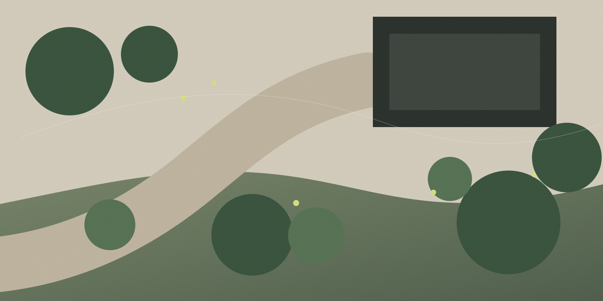

01
Landscaping
Full outdoor transformations: levels, hardscape, planting and the practical work that turns a plan into a finished garden.
Complete spacesTraditional and contemporary gardens, driveways and complete landscape installation — shaped around the property and the people who live there.
What Sanders does
A tighter service offer is more convincing than a catalogue of everything. These are the three things the business is already known for.
Full outdoor transformations: levels, hardscape, planting and the practical work that turns a plan into a finished garden.
Complete spacesLayouts that make sense before work begins — balancing movement, planting, seating and the architecture of the home.
Plan before buildDurable entrances treated as part of the property, not an isolated patch of paving.
Arrival mattersProject studies

Illustrations are concept studies created for this demo website and are not presented as completed Sanders Landscapes projects.
How the work moves
A premium site should make the next step feel obvious. This process gives homeowners a clear mental model before they call.
Access, levels, drainage, existing features and what is worth keeping.
Movement, zones, materials and planting are resolved before construction.
Groundwork, edges and hardscape create the durable structure underneath.
Planting and final details turn construction into a place people want to use.
Material language
Experience
Sanders Landscapes LTD is listed as a family-owned father-and-son business with more than forty years of combined experience across horticulture, landscaping and design.
Start with the ground
Choose the project
10 Oaklea Road, Sale, Greater Manchester